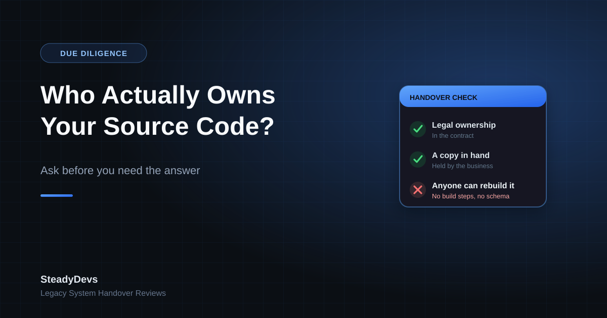

Who Actually Owns Your Source Code? The Question to Ask Before You Need the Answer
A business calls because their developer has become unresponsive. The system still runs, but nothing can be changed. Somewhere in that first conversation comes the question we have to ask: do you have the source code?
The answer is often a confident yes, followed by a pause, followed by: "Well—he has it. But we paid for it, so it's ours."
Those are two different statements, and only one of them helps you on a Monday morning when something breaks.
Three Things That Get Confused
1. Legal ownership
Who owns the intellectual property, as set out in your contract. Without a written agreement assigning it to you, ownership may well sit with the developer who wrote it—even though you paid for the work. "We paid for it" is an argument; a signed assignment clause is a fact.
2. Possession
Whether you actually have a copy. Not a promise of a copy, not access to a repository under the developer's account—a copy you hold, that continues to exist if the relationship ends badly tomorrow.
3. Usability
Whether the code you hold can be turned into a running system by someone else. This is the one that quietly fails most often. A folder of source files with no build instructions, no database schema, no configuration, no third-party licence keys and no deployment steps is an archive, not an asset.
The failure mode to avoid: being legally in the right, in possession of files, and still unable to get anything changed—because nobody can rebuild the system from what you have.
What You Should Actually Hold
A complete handover package is more than code. If you can't tick most of this list, you have a dependency rather than an asset:
- Full source code, including every project and component, with its version history if one exists.
- Database schema and a recent data export—structure, stored procedures, views, jobs, not just a data dump.
- Build and deployment instructions specific enough that a competent developer who has never seen the system can follow them.
- Configuration and environment details—connection strings, environment variables, server settings (secrets handled securely, not emailed around).
- Third-party dependencies and licences, including which components are paid, whose account they're under, and when they renew.
- Access to the accounts that matter: domain registrar, hosting, DNS, code repository, SSL certificates, any API credentials.
- A brief architecture note—what the pieces are, what talks to what, and which parts are known to be fragile.
Notice that several of those are accounts, not files. Businesses that hold their code but not their domain registrar login are still one dispute away from being offline.
How to Raise This With a Developer You Like
Owners hesitate here, because asking feels like an accusation. It isn't—and a good developer will understand immediately, because they've seen what happens to businesses that never asked.
Frame it around business continuity, not distrust. "If you were unavailable for a month, could someone else keep this running?" is a fair question about your business's resilience, not a judgement on anyone's reliability.
- Ask for a handover package as a normal, scheduled piece of work—annually, or at the end of each major project.
- Store it somewhere the business controls: a company cloud account or repository, not a personal one.
- Verify it once. Have another developer confirm the package is complete enough to build and run the system—a few hours of work that tells you whether your asset is real.
- Get the ownership position in writing if it isn't already. For future work, an IP assignment clause costs nothing to include at the start and is difficult to negotiate later.
- Keep account ownership in company names and company email addresses, with the developer added as a user rather than as the owner.
The best time to do this is while the relationship is good. Every awkward handover conversation we've seen started after something had already gone wrong—which is exactly when goodwill is scarcest.
If You're Already in the Difficult Version of This
Sometimes the question arrives too late: the developer has stopped responding, or the relationship has broken down. It's not hopeless, but the order of operations matters.
- Secure what you can reach first. Take a full backup of the live server and database today, before any access changes. Even without source code, a running system plus a database is a far stronger position than a database alone.
- Inventory your accounts. Work out which of domain, hosting, DNS, certificates and third-party services are under your control and which aren't. Recover the ones you can.
- Check what's recoverable from the server. Deployed applications often contain more than owners expect—configuration, scripts, and in some cases enough to reconstruct or continue maintaining the system.
- Make one clear, professional request in writing. Specific list, reasonable deadline, no accusations. A surprising number of these situations resolve at this step, because the developer was overloaded rather than obstructive.
- Then take advice on the rest. What your contract actually says determines your options, and that's a question for a lawyer—but do the technical preservation work first, not after.
Not Sure What You're Actually Holding?
We review handover packages and assess whether a legacy system can genuinely be maintained by someone new—before it becomes urgent. Clear findings, no jargon.
Get a Handover ReviewThe Bottom Line
Owning your system means three things at once: the legal right, a copy in your hands, and enough documentation for someone else to pick it up. Most businesses have one of the three and assume it's all of them.
Checking takes an afternoon. Finding out the hard way takes months and costs considerably more.
Frequently Asked Questions
Not automatically. Paying for development work and owning the intellectual property in it are separate things that a written agreement is supposed to connect. If your contract is silent, the position may not be what you assume—worth checking before it matters.
Usually not. Without build instructions, database schema, configuration and third-party licence details, a new developer may spend weeks just getting the system to run—if they can at all. Completeness matters more than possession.
Frame it as business continuity planning, which is what it is. Good developers expect the question and often welcome it, because it makes the scope of their responsibility clearer for both sides.
Preserve what you can access immediately—server backups, database, account control—then make one specific written request, and take legal advice on your contract position. The technical preservation is urgent; the legal question can follow.
At least annually, and after any significant piece of work. A package that's three years out of date describes a system you no longer run.